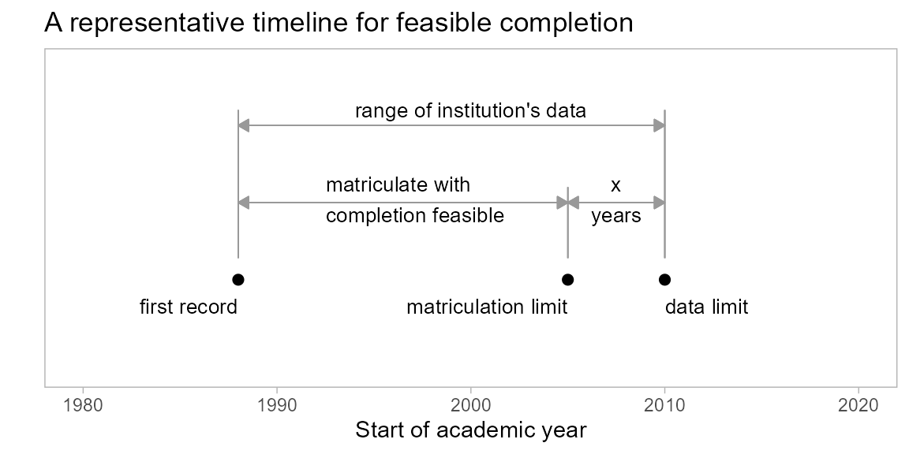

Persistence metrics often include a criterion that students complete their programs within \(x\) years (typically 6 years, based on 150% of the “normal” time to completion). See, for example, (NCES, 2020).
In longitudinal research, this completion criterion requires special care. For student records near the upper limit of an institution’s data range, a student’s completion status can be ambiguous. Consider a case in which:
The student satisfies the completion criterion, but their recorded degree status is NA because their degree term exceeds the data range.
Without special care, such students would add to the count of non-graduates, adversely and unfairly affecting the value of a persistence metric. Therefore, students with a degree status of NA are excluded from the analysis if completing their program is not feasible given the range of data available.
Feasible completion terminology is illustrated in the figure. Definitions are given below.

subset_feasible()
The first argument, id, is required. The remaining arguments all have default settings. The last three arguments accommodate using data sets other than those from midfielddata. Arguments after the ellipsis (…) must be named if used.
subset_feasible(id,
...,
span,
term_advance_max,
data_students,
data_terms,
data_degrees)id character vector of student IDsspan number of years to define feasibility, default is 6 yearsterm_advance_max maximum terms of transfer credit for advancing the matriculation limit, default is 4 terms (2 years)data_students student attributes data set, midfieldstudents or equivalentdata_terms term attributes data set, midfieldterms or equivalentdata_degrees degree attributes data set, midfielddegrees or equivalentThe primary input to subset_feasible() is a character vector of student IDs. To illustrate its use, we use the built-in data set rep_ever from the engineering case study as developed in the Stickiness metric vignette (link).
View its help page by running
? rep_everThe data are loaded with midfieldr.
# view the example IDs
str(rep_ever)
#> chr [1:11862] "MID25783166" "MID25783178" "MID25783197" "MID25783227" ...This vector of IDs is the input to subset_feasible(), which performs the subsetting for completion feasibility.
# filter IDs for feasible program completion within data limit
feasible_id <- subset_feasible(rep_ever)
# examine the result
str(feasible_id)
#> chr [1:9281] "MID25783178" "MID25783197" "MID25783441" "MID25783491" ...In this instance, we started with 11,862 enrollees. After applying the criteria for feasible completion, we retain 9281 students. These students either graduated (demonstrating the feasibility of completing their programs before the data limit) or they matriculated no later than their matriculation limits.
subset_feasible() worksThe remainder of the vignette describes the inner workings of subset_feasible(), showing intermediate results at key stages. Its operation can be divided into 5 basic steps:
The default data sets queried are from midfielddata, but if desired the arguments of subset_feasible() accommodate data sets other than those from midfielddata.
The first data accessed by subset_feasible() is midfielddegrees. The head and tail of that data are show here.
#> id institution cip6 term_degree degree
#> 1: MID26131491 Institution A <NA> NA <NA>
#> 2: MID26131493 Institution A <NA> NA <NA>
#> 3: MID26131501 Institution A <NA> NA <NA>
#> 4: MID26131502 Institution A <NA> NA <NA>
#> 5: MID26131511 Institution A <NA> NA <NA>
#> 6: MID26131523 Institution A <NA> NA <NA>
#> 7: MID26131528 Institution A <NA> NA <NA>
#> 8: MID26131534 Institution A 110101 20034 Bachelor's Degree
#> 9: MID26131544 Institution A <NA> NA <NA>
#> 10: MID26131549 Institution A <NA> NA <NA>
#> ---
#> 97631: MID25852711 Institution M 521401 19923 Bachelor of Science
#> 97632: MID25852714 Institution M 520801 20013 Bachelor of Science
#> 97633: MID25852723 Institution M <NA> NA <NA>
#> 97634: MID25852736 Institution M 521401 19996 Bachelor of Science
#> 97635: MID25852745 Institution M <NA> NA <NA>
#> 97636: MID25852756 Institution M 520801 20006 Bachelor of Science
#> 97637: MID25852761 Institution M 131202 20021 Bachelor of Arts
#> 97638: MID25852767 Institution M 260502 19946 Bachelor of Science
#> 97639: MID25852770 Institution M <NA> NA <NA>
#> 97640: MID25852801 Institution M 451001 20031 Bachelor of ArtsThe degree column is re-coded so that the values are either grad or nongrad.
#> id institution cip6 term_degree degree
#> 1: MID26131491 Institution A <NA> NA nongrad
#> 2: MID26131493 Institution A <NA> NA nongrad
#> 3: MID26131501 Institution A <NA> NA nongrad
#> 4: MID26131502 Institution A <NA> NA nongrad
#> 5: MID26131511 Institution A <NA> NA nongrad
#> 6: MID26131523 Institution A <NA> NA nongrad
#> 7: MID26131528 Institution A <NA> NA nongrad
#> 8: MID26131534 Institution A 110101 20034 grad
#> 9: MID26131544 Institution A <NA> NA nongrad
#> 10: MID26131549 Institution A <NA> NA nongrad
#> ---
#> 97631: MID25852711 Institution M 521401 19923 grad
#> 97632: MID25852714 Institution M 520801 20013 grad
#> 97633: MID25852723 Institution M <NA> NA nongrad
#> 97634: MID25852736 Institution M 521401 19996 grad
#> 97635: MID25852745 Institution M <NA> NA nongrad
#> 97636: MID25852756 Institution M 520801 20006 grad
#> 97637: MID25852761 Institution M 131202 20021 grad
#> 97638: MID25852767 Institution M 260502 19946 grad
#> 97639: MID25852770 Institution M <NA> NA nongrad
#> 97640: MID25852801 Institution M 451001 20031 gradIn this step, we use all students in the data set so that later we can use all graduates (not just those in the study) for determining median credit hours per term by institution.
The midfieldstudents data are accessed next to obtain the entering term and transfer credit hours by student ID for the students in the study only.
#> id term_enter hours_transfer
#> 1: MID25934494 19921 170
#> 2: MID25868987 19901 169
#> 3: MID25974420 19911 169
#> 4: MID25861759 20051 166
#> 5: MID25873033 19961 163
#> 6: MID25923220 19943 154
#> 7: MID25973641 19911 143
#> 8: MID25905410 19931 136
#> 9: MID26688433 20083 135
#> 10: MID26362384 20041 128
#> ---
#> 10126: MID26696429 20101 NA
#> 10127: MID26696439 20101 NA
#> 10128: MID26696484 20101 NA
#> 10129: MID26696642 20121 NA
#> 10130: MID26696771 20101 NA
#> 10131: MID26696958 20111 NA
#> 10132: MID26696967 20101 NA
#> 10133: MID26697163 20101 NA
#> 10134: MID26697444 20101 NA
#> 10135: MID26697447 20111 NAThe midfieldterms data are accessed to obtain the data limits by institution. The max_term column is the result of a group and summarize operation.
#> institution max_term
#> 1: Institution A 20034
#> 2: Institution B 20104
#> 3: Institution C 20154
#> 4: Institution D 20154
#> 5: Institution E 20034
#> 6: Institution F 20044
#> 7: Institution G 20051
#> 8: Institution H 20036
#> 9: Institution J 20096
#> 10: Institution K 20034
#> 11: Institution L 20164
#> 12: Institution M 20096The span number of years is subtracted from the maximum term to create the initial matriculation limit.
#> institution max_term span_terms matric_limit
#> 1: Institution A 20034 -12 19981
#> 2: Institution B 20104 -12 20051
#> 3: Institution C 20154 -12 20101
#> 4: Institution D 20154 -12 20101
#> 5: Institution E 20034 -12 19981
#> 6: Institution F 20044 -12 19991
#> 7: Institution G 20051 -12 19993
#> 8: Institution H 20036 -12 19981
#> 9: Institution J 20096 -12 20041
#> 10: Institution K 20034 -12 19981
#> 11: Institution L 20164 -12 20111
#> 12: Institution M 20096 -12 20041To check the term addition represented here, consider Institution M. The span is 6 years (12 terms) and the last term in the data set is 20096 or summer of 2009-10 academic year. The algorithm rounds down to the spring term 20093 and subtracts the span. The six academic years ending in the Spring 2009-10 are: 2004-05, 2005-06, 2006-07, 2007-08, 2008-09, and 2009-10. Thus the matriculation limit is Fall of 2004, encoded 20041.
In the final data query, the function filters midfieldterms by the IDs of all graduates in the data set, an ID vector we obtained in the first step. The function then determines the median number of credit hours per term by institution for successful (i.e., graduating) students.
Joining these results with the previous findings yields the data frame needed to subset for feasible completion.
#> id institution term_enter hours_transfer med_hr_per_term
#> 1: MID26131502 Institution A 20011 NA 13
#> 2: MID26131523 Institution A 20011 NA 13
#> 3: MID26131544 Institution A 19981 NA 13
#> 4: MID26133649 Institution A 19901 NA 13
#> 5: MID26135340 Institution A 20024 NA 13
#> 6: MID26137725 Institution A 19901 NA 13
#> 7: MID26138315 Institution A 20021 NA 13
#> 8: MID26140157 Institution A 19941 NA 13
#> 9: MID26140925 Institution A 19913 NA 13
#> 10: MID26141076 Institution A 20001 NA 13
#> ---
#> 10126: MID25852065 Institution M 19981 NA 14
#> 10127: MID25852214 Institution M 20081 NA 14
#> 10128: MID25852453 Institution M 19891 NA 14
#> 10129: MID25852465 Institution M 19891 NA 14
#> 10130: MID25852497 Institution M 19981 NA 14
#> 10131: MID25852503 Institution M 19981 NA 14
#> 10132: MID25852510 Institution M 19941 NA 14
#> 10133: MID25852624 Institution M 19921 NA 14
#> 10134: MID25852630 Institution M 20061 NA 14
#> 10135: MID25852745 Institution M 20011 NA 14
#> matric_limit degree
#> 1: 19981 nongrad
#> 2: 19981 nongrad
#> 3: 19981 nongrad
#> 4: 19981 nongrad
#> 5: 19981 nongrad
#> 6: 19981 nongrad
#> 7: 19981 nongrad
#> 8: 19981 nongrad
#> 9: 19981 grad
#> 10: 19981 nongrad
#> ---
#> 10126: 20041 grad
#> 10127: 20041 nongrad
#> 10128: 20041 grad
#> 10129: 20041 grad
#> 10130: 20041 nongrad
#> 10131: 20041 grad
#> 10132: 20041 nongrad
#> 10133: 20041 grad
#> 10134: 20041 nongrad
#> 10135: 20041 nongradTransfer credit hours are converted to an equivalent number of “transfer terms” by dividing by the median hours per term. The result is capped (default is 4 terms or 2 years) to account for the common institutional policy that the final two years of an undergraduate degree be earned at the degree-granting institution.
Transfer students’ matriculation limits are advanced by the number of transfer terms. The printout shows two students (lines 8 and 10,132) whose matriculation term exceeds the matriculation limit, exemplifying students who are removed from the analysis in the next step.
#> id term_enter matric_limit degree
#> 1: MID25783178 19946 20041 grad
#> 2: MID25783197 19871 20041 grad
#> 3: MID25783388 19871 20041 nongrad
#> 4: MID25783441 19921 20041 grad
#> 5: MID25783491 19961 20041 grad
#> 6: MID25783553 20021 20041 nongrad
#> 7: MID25783606 20011 20041 nongrad
#> 8: MID25783648 20071 20041 nongrad
#> 9: MID25783912 19971 20041 grad
#> 10: MID25784022 20011 20041 nongrad
#> ---
#> 10126: MID26696484 20101 20111 grad
#> 10127: MID26696642 20121 20111 grad
#> 10128: MID26696738 20114 20131 grad
#> 10129: MID26696771 20101 20111 grad
#> 10130: MID26696958 20111 20111 nongrad
#> 10131: MID26696967 20101 20111 grad
#> 10132: MID26696979 20154 20131 nongrad
#> 10133: MID26697163 20101 20111 grad
#> 10134: MID26697444 20101 20111 grad
#> 10135: MID26697447 20111 20111 gradThis final data frame is ready for subsetting for feasible completion. All graduates are retained. Non-graduates are retained if their term of entry is no later than their matriculation limit.
#> id term_enter matric_limit degree
#> 1: MID25783178 19946 20041 grad
#> 2: MID25783197 19871 20041 grad
#> 3: MID25783388 19871 20041 nongrad
#> 4: MID25783441 19921 20041 grad
#> 5: MID25783491 19961 20041 grad
#> 6: MID25783553 20021 20041 nongrad
#> 7: MID25783606 20011 20041 nongrad
#> 8: MID25783912 19971 20041 grad
#> 9: MID25784022 20011 20041 nongrad
#> 10: MID25784025 19891 20041 nongrad
#> ---
#> 8034: MID26696439 20101 20111 nongrad
#> 8035: MID26696484 20101 20111 grad
#> 8036: MID26696642 20121 20111 grad
#> 8037: MID26696738 20114 20131 grad
#> 8038: MID26696771 20101 20111 grad
#> 8039: MID26696958 20111 20111 nongrad
#> 8040: MID26696967 20101 20111 grad
#> 8041: MID26697163 20101 20111 grad
#> 8042: MID26697444 20101 20111 grad
#> 8043: MID26697447 20111 20111 gradThe final output of the function is the ID column from this data frame.
#> chr [1:8043] "MID25783178" "MID25783197" "MID25783388" "MID25783441" ...This vector is identical to feasible_id described in the first part of the vignette.
The vignette code chunks are collected below in a single, condensed script.
# packages used
library(midfieldr)
# part 1: How to use subset_feasible()
feasible_id <- subset_feasible(rep_ever)
# part 2: How subset_feasible() works
# no reproducible code